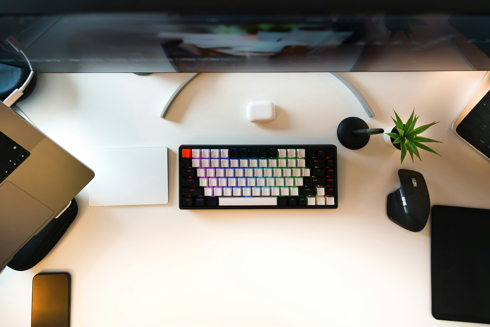

Souris et clavier : bien utiliser son matériel pour prévenir les
troubles musculo-squelettiques
L’usage intensif de la souris et du clavier expose à des douleurs du
poignet, du coude et des épaules. Découvrez comment choisir un
matériel ergonomique et adopter les bons gestes pour limiter les TMS
et travailler dans de meilleures conditions.

Pourquoi bien utiliser sa souris et son clavier est essentiel ?
Avec la dématérialisation et le télétravail, de nombreux
professionnels passent plusieurs heures par jour devant un écran.
Une mauvaise utilisation de la souris et du clavier peut entraîner
des troubles musculo-squelettiques (TMS) tels que :
tendinites du poignet ou du coude ;
syndrome du canal carpien ;
tendinite de De Quervain ;
arthrose et douleurs chroniques.
Une ergonomie adaptée permet de réduire ces risques, d’améliorer le
confort et d’augmenter l’efficacité au quotidien.
Bien choisir sa souris
L’ergonomie d’une souris a un impact direct sur la posture du
poignet et la charge musculaire. Quelques principes à respecter :
privilégier une souris sans fil pour éviter les
tensions liées au câble ;
choisir une souris qui
suit la courbe naturelle de la main
afin de garder un poignet neutre ;
opter pour une souris légèrement plus large pour solliciter
davantage les muscles du bras, plus puissants ;
s’assurer que les boutons répondent facilement sans nécessiter une
pression excessive.
Les souris classiques en forme de goutte d’eau restent une solution
polyvalente, confortable et adaptée à la majorité des utilisateurs.
Choisir un clavier ergonomique
Un clavier adapté contribue à réduire l’extension du poignet et
améliore le confort de frappe. Voici les critères à privilégier :
un clavier indépendant de l’écran pour régler librement la
distance de lecture ;
une inclinaison comprise entre 0 et 12° ;
une épaisseur inférieure à 3 cm pour limiter les
tensions ;
une surface mate avec caractères sombres sur fond clair ;
des modèles compacts pour rapprocher la souris et réduire
l’écartement du bras ;
les claviers « éclatés » permettent de réduire l’inclinaison
ulnaire, mais peuvent augmenter la charge sur l’épaule.
Comment utiliser correctement sa souris ?
Quelques bonnes pratiques permettent de limiter la fatigue et de
prévenir les blessures :
tenir la souris de manière souple, sans crispation ;
garder le poignet dans l’axe de l’avant-bras ;
déplacer la souris avec l’épaule plutôt qu’avec le poignet seul ;
éviter d’appuyer sur un repose-poignet, qui augmente la pression
sur le canal carpien ;
alterner l’usage de la souris entre les deux mains si possible.
Bien positionner son clavier
Le positionnement du clavier joue un rôle majeur dans le confort des
épaules et des poignets :
le clavier doit être centré, aligné avec le corps ;
placé entre 10 et 15 cm du bord pour un appui
ponctuel des poignets ;
la frappe doit rester légère pour éviter les tensions musculaires.
Où placer la souris par rapport au clavier ?
Pour éviter d’étendre excessivement le bras, la souris peut être
placée :
entre vous et le clavier, dans l’axe du bras ;
ou remplacée par un pavé tactile intégré pour limiter les
mouvements latéraux.
Conclusion : adoptez les bons gestes
En maintenant vos poignets alignés, en ajustant votre matériel et en
trouvant la position la plus naturelle possible, vous réduisez
considérablement le risque de TMS. Testez différentes configurations
et adaptez votre poste de travail à vos besoins : votre corps vous
remerciera.